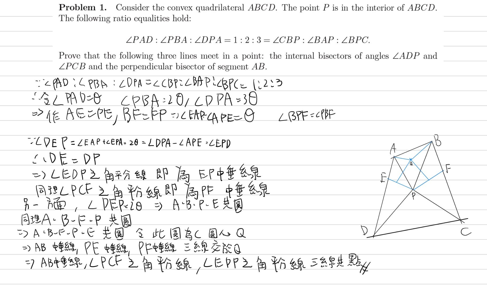
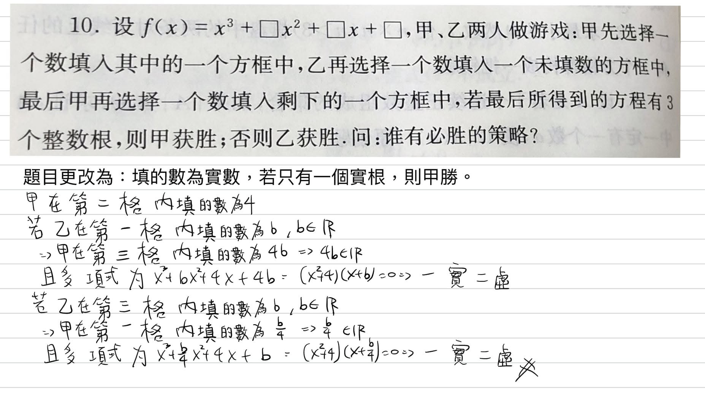

星分享參與AMC10網課心得
AMC10深水區網課已經進行到最後階段了，雖然我偶有跟課，但是真正認真上課的還是星，我特地請星寫下他的心得和大家分享：
我參加獵豹數學的 AMC10 深水區網課，我很喜歡網課，有時候時間來不及，我常常都邊上課邊吃飯。建廷老師在第一節上課的時候，就拿了
AMC12 深水區的題目來讓我們想，那天中間下課我都沒有休息，想出來的時候好開心！硯吉老師教的幾何單元是我最喜歡的，老師特別強調相似形和共圓很好用，上了硯吉老師的幾何課，我突然想起好久沒有做幾何題了，找了比較有趣的幾何題，想了好幾天，最後就是用硯吉老師說的共圓解了！青易老師的韋達定理是我比較熟習的，讓我趁機練習一些題目應用。
另外讓我印象最深刻的是誠聰老師的必勝策略單元，這是我最不會的，以前都沒有接觸過，做系統習題作業的時候，覺得題目不太容易，其中有一題，我想了兩天才想到，我還找媽媽一起來跟我玩，媽媽本來都說她在回覆其他媽媽的問題，一直在滑手機，都沒空理我，所以我找她一起來玩這題遊戲，最後用我想到的必勝策略贏過媽媽！我也另外找了一個必勝策略的題目來想，雖然我還是很不會，但是想到的時候覺得很好玩。我很喜歡這樣有挑戰性的網課，希望能繼續參加！
https://www.facebook.com/groups/695697124716309/permalink/739581950327826/

